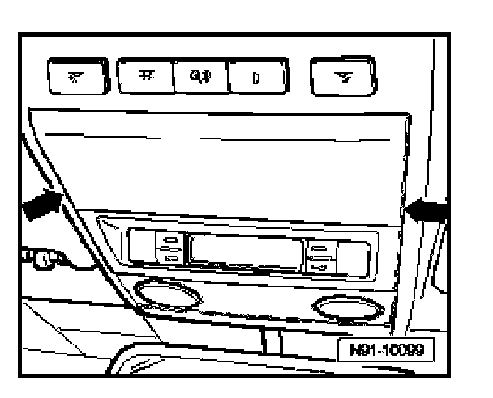
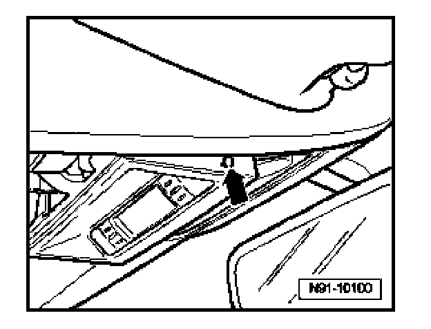
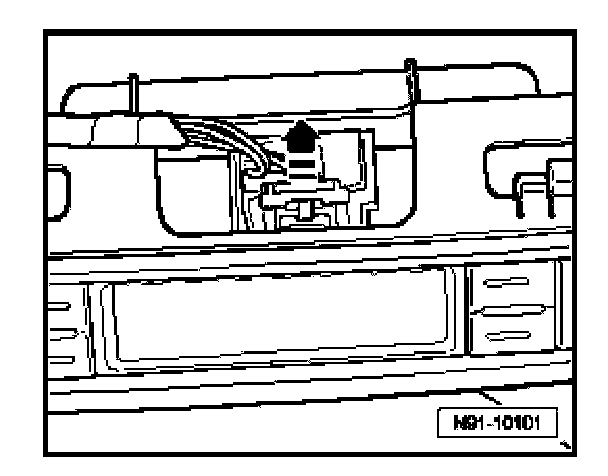
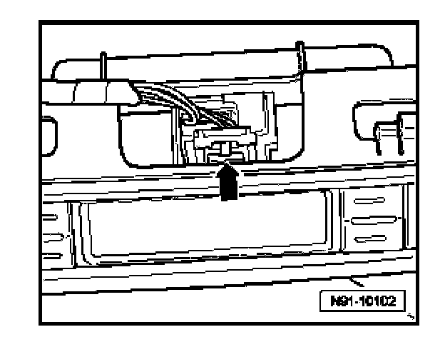

Telematics Control Head -E264-, Removing and Installing
Telematics Control Head -E264-, Removing And Installing
Removing
CAUTION:
Before beginning repairs on the electrical system:
- Switch off all electrical consumers.
- Switch ignition off and remove ignition key.
- Disconnect battery according to system installed in vehicle (single or dual battery system).
- When disconnecting and reconnecting battery terminals, observe all applicable Notes and torque specifications, as well as instructions on performing OBD program and electrical system function checks as specified.

- Using appropriate screwdriver, carefully unclip rear portion of roof console trim from areas indicated with -arrows-.

- Using appropriate screwdriver, carefully unclip both sides of display unit in area indicated with -arrow-.

- Unclip and pull up red connector lock in direction of -arrow-.

- Lift connector lock in direction of -arrow- and disconnect electrical connection.
CAUTION: Telematics control head buttons cannot be removed, dismantled or serviced separately. Should malfunctions occur, replace complete control head.
Installing
Install in reverse order of removal.
- Check Telematics system coding and recode if necessary.
Telematics Control Module -J499-, Coding